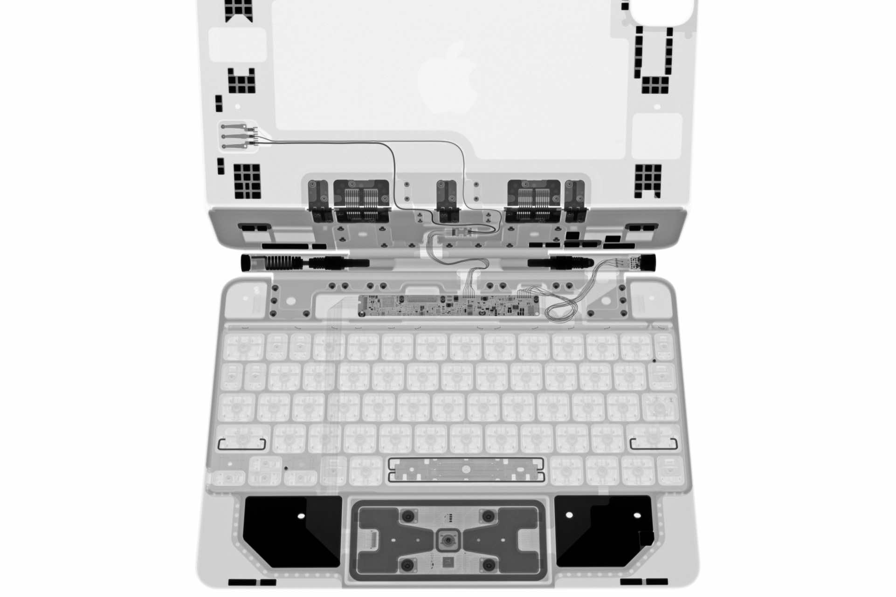
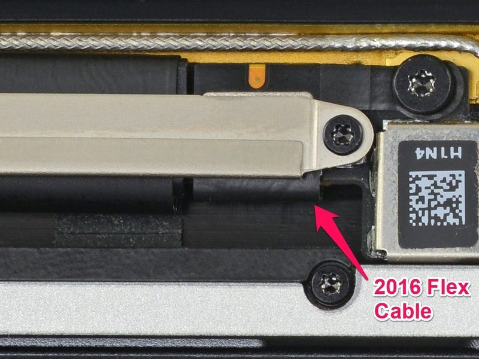
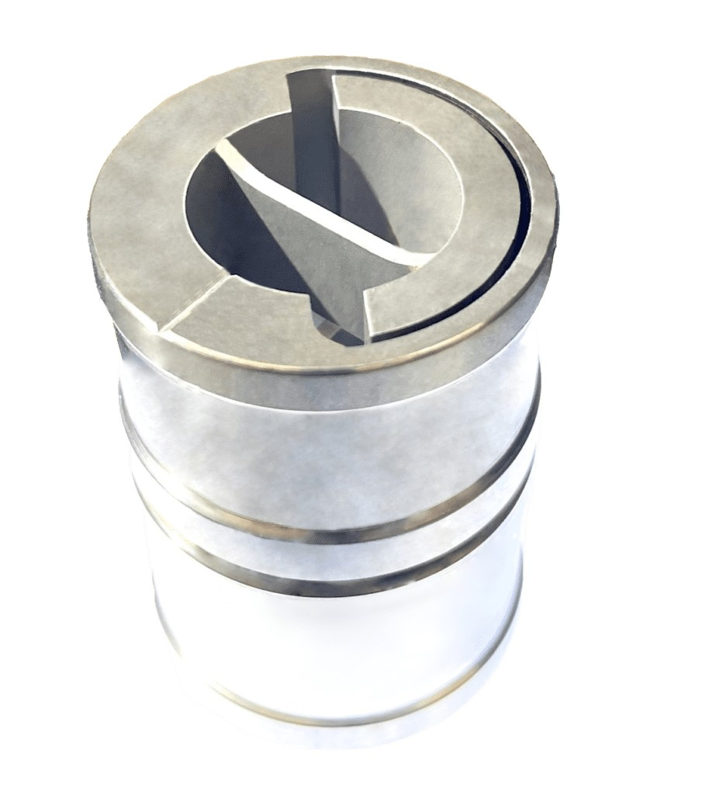

03
转轴与铰链
一切转动连接：阻尼转轴、折叠屏铰链、360° 转轴、一体成型活动铰链。 本类共 17 篇。
杯型铰链 1 篇

阻尼铰链 1 篇
阻尼转轴 6 篇

VESA MIS-D 75-100 接口与倾角摩擦关节
桌面显示器能随便换支架，靠的是后壳上那四个成正方形的螺丝孔：VESA FDMI 里最常见的 MIS-D，孔距不是 75×75 mm 就是 100×100 mm，配 M4×10 mm 螺丝，指南重量上限 14 kg。支架这一侧则是一块挂板加上可以调松紧的倾角/旋转摩擦关节——例如乐歌 D7A 把挂板上沿做成 U 形槽，再用三颗内六角螺丝给球头限位。孔距对了只解决「装得上」，能不能悬停还要另调臂上的张力螺丝，见 显示器气弹簧支架：张力螺丝与悬停平衡。

iMac 27 英寸铰链弹簧塑料帽失效（反面案例）
2012 年之后的 27 英寸 iMac 用一只带拉簧的金属铰链来平衡整块屏幕的俯仰；把弹簧钩在位子上的，却是一对薄弱的塑料帽（L 形垫片）。用一段时间后塑料断裂，用户会听到一声巨响，屏幕直接倒到最低点、再也撑不住。铰链座本身用了很多金属螺丝固定，唯独最受力的「钩住弹簧」这一下用了塑料——这是典型的材料选错位置。

iPad Magic Keyboard 双铰链悬浮支架与配重
iPad Pro 的 Magic Keyboard 不是普通笔记本转轴：主铰链是带弹簧的金属圆筒，只有开/合两个到位；打开后再用背板上的第二条「折痕铰链」去调视角（官方宣传 90–130°）。因为 iPad 比笔记本屏幕重得多，键盘掌托里放了大块金属配重，并且把背板做成可折的悬臂，把 iPad 的重心往前移，整机才不会向后翻。

微软 Surface Book 动态支点铰链（分段铝铰链）
屏幕比底座重的二合一笔记本，用普通单轴（筒形）铰链一打开就会后翻；Surface Book 改用 4 个转动点串成的分段铝「脊椎」，开盖时像地毯一样向后滚出，让底座的支撑面最多延长 20 mm、把支点后移，于是不用给底座配重，省下「几百克」。

微软 Surface Pro Kickstand 宽角摩擦铰链
Surface Pro 后盖上的宽幅撑脚不是「几档卡位」，而是左右两只外露的摩擦铰链：从闭合到接近平放都能连续停住，用来同时满足打字、触控和手写。Microsoft 官方把 Pro 3 的范围写成 0–150°；到 Pro 5，iFixit 观察到铰链改过，又多出 15°、达到 165°。要换铰链必须先揭掉整块粘接屏幕。这是后盖撑脚摩擦铰链，不是 Surface Book 的分段动态支点，也不是肌肉线电控锁。

恒扭力摩擦铰链：卡簧过盈产生扭力与「最低扭力 > 盖板力矩」选型
笔记本屏幕、设备翻盖能「停在任意角度」，是因为铰链里的摩擦扭矩大于盖板重力产生的力矩。Reell 的 TI-C5M 扭力插件把一串淬火钢卡簧过盈套在淬火钢轴上，**每多一片卡簧就多一份扭矩**，所以用标准件就能拼出 0.15/0.25/0.30 N·m，寿命 3 万次；整个插件压入塑料或金属孔即可，不需要螺丝。Sugatsune 的选型文章给出计算方法：力矩 = 重量 × 重心到转轴距离，按铰链数平分，然后**要用铰链扭矩公差的下限去比**，例如标称 60 lbf·in ±10% 的铰链最低只有 54 lbf·in。
标准接口 1 篇
反面案例 2 篇
iMac 27 英寸铰链弹簧塑料帽失效（反面案例）
2012 年之后的 27 英寸 iMac 用一只带拉簧的金属铰链来平衡整块屏幕的俯仰；把弹簧钩在位子上的，却是一对薄弱的塑料帽（L 形垫片）。用一段时间后塑料断裂，用户会听到一声巨响，屏幕直接倒到最低点、再也撑不住。铰链座本身用了很多金属螺丝固定，唯独最受力的「钩住弹簧」这一下用了塑料——这是典型的材料选错位置。

苹果 MacBook Pro 2016 Flexgate（反面案例）：绕板的屏幕排线与 2018 年加长 2 mm
2016 年 Touch Bar 世代 MacBook Pro 不再像前代那样把较粗的线缆**穿过**铰链，改为把薄 FPC 屏幕排线**绕过**铰链下方的显示控制板，用一对弹簧压盖固定。每次开合排线都被拉紧，一两年后背光排线最先疲劳撕裂，屏幕底部出现「舞台灯」状的亮区，最后开盖超过约 40° 背光全灭。排线又是屏幕总成的一部分，不能单独换，iFixit 说「把 6 美元的问题变成 600 美元的灾难」。2018 款悄悄把排线加长 2 mm，开到 90° 以上时排线不再碰到控制板。Apple 后来为 13 英寸 2016 款开了免费服务计划（覆盖首次零售起 5 年）。
弹簧与缓冲 1 篇
折叠屏铰链 2 篇


齿轮同步机构 2 篇
活动铰链/柔性铰链 5 篇

十字交叉簧片枢轴（Cross-spring pivot）：交叉位置对寄生位移的影响与 C-Flex I-10 实例
十字交叉簧片枢轴用两片（或三片）簧片交叉构成转动中心：簧片可以在中点相交（λ = 1/2），也可以把交点移开；中点交叉在 α = 45°、θ = 30° 时寄生位移约为 L/31，把交点移到 λ = 1/2 ± √5/6 可以消掉二阶的横向寄生，但会让其中一段簧变得很短、应力升高。商品上的 C-Flex I-10 把三片簧放在两个互不接触的不锈钢套筒里钎焊成一体，额定最大转角 ±15°，作为量产实例写在本篇，不再按品牌拆第二篇。

卡特轮柔性铰链（Cartwheel flexure）：中心交叉梁转动副，对照切口短铰与十字簧片
卡特轮柔性铰链用两对（或可看成两组）柔性梁在中点交叉并在交点连成一体，形成一个比直圆、圆角短切口转角能力更大的柔性转动副。Naves 等把它解释成两套十字簧片（交叉位置 λ = 0 与 λ = 1）叠在一起，并给出寄生位移公式；在 α = 45°、θ = 30° 时寄生运动约为 L/162，小于中点交叉的普通十字簧片。它不是薄膜活铰，也不是短切口铰。

圆角直梁柔性铰链（Corner-filleted flexure hinge）：等厚直梁加两端圆角 r，对照直圆切口铰
圆角直梁柔性铰链的中间是一段厚度为 t 的等厚直梁，长度为 l，两端用圆角 r 接到刚性框上；它和直圆切口铰的差别在于厚度沿长度不是按圆弧连续变化、最小厚度也不只出现在中点。Meng 等给出了 r = 0.1 l 时的经验刚度式，并把适用范围扩到 0.02 ≤ t/l ≤ 1；赵磊等给出了平面柔度矩阵在不同 l/t、r/t 下相对有限元的误差范围。不要把这两套公式当成直圆铰公式换个名字。

活动铰链（Living Hinge）：一体成型的柔性铰链
用和两侧刚性件相同的材料做一段「变薄」的区域当铰链，一次注塑同时成型三部分；PP/PE 抗疲劳最好，常见于瓶盖、Tic Tac 盒盖和一次性包装。

直圆切口柔性铰链（Right circular flexure hinge）：最薄处厚度 t、切口半径 R 与公式适用范围
直圆切口柔性铰链是在刚性块上用一对垂直于端面的对称圆柱面切出圆弧槽，最薄处留下厚度 t、切口半径 R、宽度 b，靠颈部局部弯曲提供近似转动，而不是靠轴销或薄膜弯折。吴鹰飞、周兆英给出了一般切口（圆心角 θₘ）和直圆（θₘ = 90°）的闭合柔度公式；Yong 等用有限元核对了 Paros–Weisbord 简化式与精确式在不同 t/R 下的误差，并划出选用范围。它和库内已有的薄膜活铰、恒扭力摩擦铰链不是同一类转动副。
交叉簧片轴承 1 篇
精密柔性铰链 3 篇
卡特轮柔性铰链（Cartwheel flexure）：中心交叉梁转动副，对照切口短铰与十字簧片
卡特轮柔性铰链用两对（或可看成两组）柔性梁在中点交叉并在交点连成一体，形成一个比直圆、圆角短切口转角能力更大的柔性转动副。Naves 等把它解释成两套十字簧片（交叉位置 λ = 0 与 λ = 1）叠在一起，并给出寄生位移公式；在 α = 45°、θ = 30° 时寄生运动约为 L/162，小于中点交叉的普通十字簧片。它不是薄膜活铰，也不是短切口铰。
圆角直梁柔性铰链（Corner-filleted flexure hinge）：等厚直梁加两端圆角 r，对照直圆切口铰
圆角直梁柔性铰链的中间是一段厚度为 t 的等厚直梁，长度为 l，两端用圆角 r 接到刚性框上；它和直圆切口铰的差别在于厚度沿长度不是按圆弧连续变化、最小厚度也不只出现在中点。Meng 等给出了 r = 0.1 l 时的经验刚度式，并把适用范围扩到 0.02 ≤ t/l ≤ 1；赵磊等给出了平面柔度矩阵在不同 l/t、r/t 下相对有限元的误差范围。不要把这两套公式当成直圆铰公式换个名字。
直圆切口柔性铰链（Right circular flexure hinge）：最薄处厚度 t、切口半径 R 与公式适用范围
直圆切口柔性铰链是在刚性块上用一对垂直于端面的对称圆柱面切出圆弧槽，最薄处留下厚度 t、切口半径 R、宽度 b，靠颈部局部弯曲提供近似转动，而不是靠轴销或薄膜弯折。吴鹰飞、周兆英给出了一般切口（圆心角 θₘ）和直圆（θₘ = 90°）的闭合柔度公式；Yong 等用有限元核对了 Paros–Weisbord 简化式与精确式在不同 t/R 下的误差，并划出选用范围。它和库内已有的薄膜活铰、恒扭力摩擦铰链不是同一类转动副。
线缆穿铰链 3 篇
微软 Surface Book 动态支点铰链（分段铝铰链）
屏幕比底座重的二合一笔记本，用普通单轴（筒形）铰链一打开就会后翻；Surface Book 改用 4 个转动点串成的分段铝「脊椎」，开盖时像地毯一样向后滚出，让底座的支撑面最多延长 20 mm、把支点后移，于是不用给底座配重，省下「几百克」。

微软 Surface Duo 360° 双铰链
Surface Duo 不用柔性屏，而用两块独立屏 + 两个齿轮铰链（各用 3 颗螺丝固定在稳定杆上）实现 360° 翻折，排线从铰链壳体内穿过以防被夹，结构比折叠屏铰链简单得多。
苹果 MacBook Pro 2016 Flexgate（反面案例）：绕板的屏幕排线与 2018 年加长 2 mm
2016 年 Touch Bar 世代 MacBook Pro 不再像前代那样把较粗的线缆**穿过**铰链，改为把薄 FPC 屏幕排线**绕过**铰链下方的显示控制板，用一对弹簧压盖固定。每次开合排线都被拉紧，一两年后背光排线最先疲劳撕裂，屏幕底部出现「舞台灯」状的亮区，最后开盖超过约 40° 背光全灭。排线又是屏幕总成的一部分，不能单独换，iFixit 说「把 6 美元的问题变成 600 美元的灾难」。2018 款悄悄把排线加长 2 mm，开到 90° 以上时排线不再碰到控制板。Apple 后来为 13 英寸 2016 款开了免费服务计划（覆盖首次零售起 5 年）。